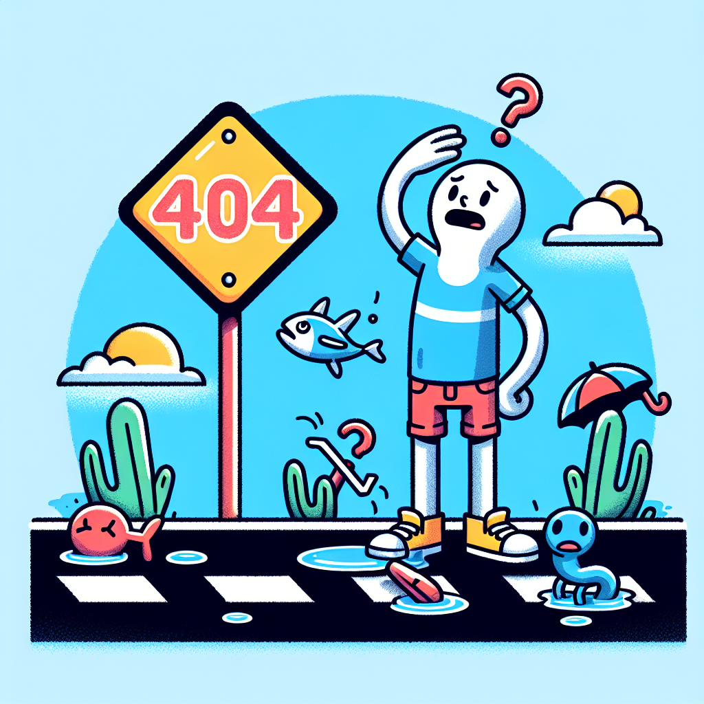

Uh oh!
We're sorry; we can't find the page you're looking for.

Does one of these pages offer what you're looking for?
- Home: Find information about physical and mental health, life outside the classroom, and a brief overview of the rest of the site.
- Academic Success: Find information about peer tutoring, academic advising, and additional academic resources.
- Achieving Balance: Find information about study spaces, student organizations, campus gyms, and fun things to do in Ann Arbor.
- Emergency Resources: Find information about resources you can use in an emergency (e.g. food pantry, mental health resources, safe ride home, and more).